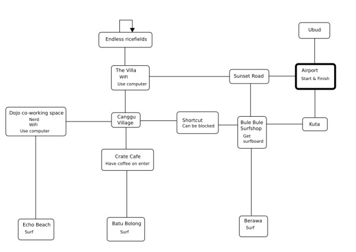

Joonas Häkkinen
Command:

Walkthrough
The game starts at the airport. The goal is to learn three web development skills (HTML, CSS and JavaScript) and to surf at three different surf spots (Echo Beach, Batu Bolong and Berawa) before returning to the airport. The player is carrying a laptop computer.
HTML and CSS are learned by using the computer either at The Villa or Dojo Co-working space. When the player uses the computer for the first time, he learns HTML. After this he must go to Crate Cafe for a coffee before the computer can be used again. The player automatically drinks a coffee when he enters Crate. After this he can go back to Dojo or The Villa and use the computer again to learn CSS. JavaScript is learned by talking to the nerd in Dojo.
Before the player can surf, he needs to pick up a surfboard from Bule Bule Surfshop. After this he can go to Berawa, Batu Bolong or Echo Beach and surf by giving the command “surf” or “use surfboard”.
When the player has all three skills and has surfed at all three spots, he must return to the airport to finish the game. If he doesn’t do this within 100 turns, he loses.
There’s an area named “Shortcut” between Bule Bule Surfshop and Canggu Village. The shortcut can be blocked or not, which is decided randomly when the player enters the area. If it’s blocked, the player must return to the previous area and either go around the long way through Sunset Road or try going back to the shortcut, where the condition is chosen randomly again. The probability for the shortcut being blocked is 2/5.
The available commands are:
go <direction>: move to the given direction (north, east, south or west)
get <itemname>: pick up an item
drop <itemname>: drop an item
inventory: lists the items and skills that you have
examine <itemname>: take a closer look at an item
use <itemname>: use item
talk to <character>: have a chat with a game character
surf: go surf! (where applicable)
quit: exit game
help: lists the available commands